13 Global environmental change
13.1 Phenology changes
Authored by Lucas Gsponer, Fabio Jakob and Rasheed Abdelsamed. Edited by Laura Marqués.
In Section 6.2, we provided a basis for phenology. In this section, we present some insights on recent changes observed in plant phenology, their main drivers, and the climatic feedbacks of vegetation phenology.
13.1.1 Plant phenology
Plant phenology is the study of the timing of periodic biological events in plants, such as leaf unfolding and leaf senescence. These events are commonly influenced by environmental factors like temperature, radiation, and water availability. A phenological event is described as a point in the annual life cycle of a plant, generally marking the start or endpoint of a phenophase, and can be recorded as a calendar date. The start of the season (SOS) or spring phenology refers to the time when plants first exhibit significant biological activity after a period of dormancy. This is often marked by the leaf-out or leaf unfolding. The end of the season (EOS) or autumn phenology denotes the point at which plants transition back to a state of dormancy or reduced biological activity. This period is typically marked by leaf senescence, defined as leaf coloring and shedding. SOS and EOS are commonly expressed as day-of-year (DOY) with values ranging from 1 (1 January) to 365 (366 in leap years; 31 December). Defining the precise start and end of the season can vary depending on the specific plant species and local environmental conditions.
13.1.2 Methods of plant phenology
Phenology observations are measured at different scales through various methods, ranging from ground-based to remote sensing technologies (Figure 13.1).
Ground-based observations involve manually recording specific phenophases. Observers, including scientists and citizen scientists, track these changes on the ground, which provides detailed local data. These observations can be unevenly distributed across regions and may lack consistency due to varying methods among observers. Efforts have been made to compile large-scale and uniform observations. The PEP725 (Pan European Phenology Project) is a collaborative database that collects and shares phenological data across Europe (Templ et al. 2018) and is especially helpful in investigating trends, comparing seasonal shifts, and analyzing regional responses of species to environmental changes. The phenological events can be described using the European-based BBCH coding system (Bilogische Bundesanstalt, Bundessortenamt und Chemische Industrie) which provides a standardized scale for identifying plant stages (Meier et al. 2009).
Remotely sensed solar-induced chlorophyll fluorescence (SIF) measures light re-emitted by chlorophyll during photosynthesis thus representing photosynthetic activity and more accurately capturing seasonal GPP dynamics, particularly in evergreen forests (Smith et al. 2018). However, the temporal and spatial resolution of SIF data is still very coarse (Sun et al. 2017).
PhenoCams are time-lapse cameras that allow monitoring of seasonal vegetation changes and offer high-frequency data at the community level (Richardson et al. 2018). These camera-based phenology networks are currently located in many carbon flux sites to be linked with measures of ecosystem structure and functions (Tang et al. 2016).
Unmanned aerial vehicles (UAVs) are equipped with multispectral or hyperspectral cameras, providing high-resolution imagery of vegetation from tree to landscape level. This enables a direct link between field-based and remote-sensing observations (Klosterman et al. 2018).
In recent decades, remote sensing techniques have significantly enhanced traditional observations of plant phenology. Satellite remote sensing data, particularly from indices like the Normalized Difference Vegetation Index (NDVI) and the Enhanced Vegetation Index (EVI), are used to detect the timing of key phenological events based on vegetation greenness across landscapes (Liu, Fu, et al. 2018).
13.1.3 Recent trends in plant phenology
13.1.3.1 Evidence from ground-based observations
Over the past few decades, spring phenology has consistently advanced across the Northern Hemisphere. In Europe, spring leaf-out significantly advanced during the period 1982–2011 at an average rate of -0.47 days yr-1 for deciduous trees (Fu et al. 2014) (Figure 13.2 a), based on data from the PEP725 network (Templ et al. 2018). Similarly, in China, the mean advance of spring leaf unfolding was -0.42 days yr-1 for the same period (Ge et al. 2015) (Figure 13.2 c). In North America, the trend was slower, with the SOS advancing by -0.09 days yr-1 for the period 1982-2011 (Figure 13.2 e), based on stations of the USA National Phenology Network (US-NPN data).
In contrast, autumn leaf senescence has shown a weaker and less consistent trend (Piao et al. 2019), and fewer studies have investigated in situ EOS trends (Gallinat, Primack, and Wagner 2015). In Europe, autumnal events have been delayed by only 0.01 days yr-1 between 1982 and 2011 (Fu et al. 2014) (Figure 13.2 b), using records from the PEP725 network (Templ et al. 2018). In China, the EOS was delayed more substantially, by 0.26 days yr-1 for this period (Ge et al. 2015) (Figure 13.2 d). Although there was not enough data for leaf senescence in the US-NPN, other studies showed leaf coloring in the USA has also been delayed ranging from 0.24 to 0.36 days yr-1 (S.-J. Jeong and Medvigy 2014).

13.1.3.2 Evidence from remote-sensing data
An early onset of the SOS has been observed also from satellite NDVI records from the Global Inventory Modeling and Mapping Studies (GIMMS) during 1982–2011 in approximately 75% of the Northern Hemisphere, while a delay was found in other regions, primarily in western North America (Figure 13.3 a). Some recent satellite‐based studies suggest that the trend of advancing SOS has decelerated since 2000 (Park et al. 2018). Altogether, the advancement of the SOS has an average rate of 0.21 days yr-1 (Piao et al. 2019).
A delay in the EOS was reported over the past decades, with an overall trend of 0.18 days yr-1 (Liu et al. 2016). Spatially, EOS trends were less homogeneous than SOS trends, with ~65% of the Northern Hemisphere showing a delay in EOS while an advance was found in ~35% of the territory, mainly in Siberia and arid/semi‐arid regions (Figure 13.3 b).

Both ground-based observations and satellite‐based studies are consistent and generally show an advance in spring phenology and a delay in autumn leaf senescence over the past decades. However, these changes in SOS and especially on EOS are not consistent across the globe (Piao et al. 2019) and differ by regions, periods considered, and plant species (Figure 13.4).

13.1.4 Main drivers of plant phenology
The timing of plant phenology events is determined by various biological and environmental drivers. As we discussed in Section 6.2, the way how these factors influence plant phenology varies between phenophases.
Drivers of SOS
Spring temperatures, photoperiod and winter chilling are the most important factors controlling spring phenology in temperate and boreal forests (Flynn and Wolkovich 2018).Temperature is the primary driver of spring phenology. Warmer spring temperatures drive the advancement observed for many species. A certain amount of growing degree days which represents an accumulation of warmth is needed to break the second phase of dormancy (Section 6.2). Photoperiod is a secondary driver and although less important than temperature for SOS, some species are more sensitive to a specific day length like for instance the late successional species European beech (Fagus sylvatica). Shorter-lived, early successional species like Larch (Larix decidua) are less sensitive to photoperiod. Winter chilling is needed to induce the two phases of the dormancy.
Experimental studies have shown that warmer temperatures, longer photoperiods, and additional chilling all caused large advances in spring leaf-out (Figure 13.5). In addition, the interaction between drivers also affects the timing of the phenophases. For example, insufficient winter chilling may be compensated by warmer temperatures. Yet, phenological responses to climatic factors appear to be species-specific (Körner and Basler 2010) and vary across latitudes (Alecrim, Sargent, and Forrest 2023).

Drivers of EOS
Photoperiod is the primary driver of EOS. Reducing photoperiod when moving from summer to autumn, induces leaf senescence in many species. Temperature is a secondary driver of EOS. In the Northern Hemisphere, remote-sensing data has shown a positive correlation between EOS and temperature in more than 70% of the territory (Figure 13.6 a). However, temperature effects on EOS are weaker than on SOS due to photoperiod constraints. Plant phenology can also be influenced by water and nutrient availability, particularly in regions where these resources are limited. Partial correlations between precipitation and EOS were negative at high latitudes, but positive in dry regions, suggesting that higher water availability might delay autumn senescence (Figure 13.6 b).

In addition to the environmental factors, the timing of the autumn senescence is also affected by the timing of spring phenology Figure 13.7. An earlier SOS in spring appears to induce an earlier EOS in autumn. The mechanism behind this pattern may be related to leaf longevity and cell aging (Lim, Kim, and Gil Nam 2007) but may also be associated with an increase in soil water loss earlier in the growing season inducing a premature defoliation due to drier soil conditions.

Comparing to SOS, the trends of the EOS are less clear and the magnitude of the changes smaller. This is due to (1) the multiple confounding drivers affecting EOS. The influence of warmer temperatures (delay EOS) would be somewhat offset by the influence of earlier spring (advance EOS), and (2) the fact that spring phenology is strongly influenced by warmer spring temperatures, while autumn phenology highly responds to photoperiod (day length) and this remains the same under climate change.
13.1.5 Phenology feedbacks on climate change
Leaf phenology is not only driven by climate but also controls many feedbacks of vegetation to the climate system by influencing their seasonality. The feedbacks of the Earth system have been extensively addressed on Chapter 9. Here, Figure 13.8 illustrates the primary feedbacks of plant phenological changes to the climate system (Richardson et al. 2013).
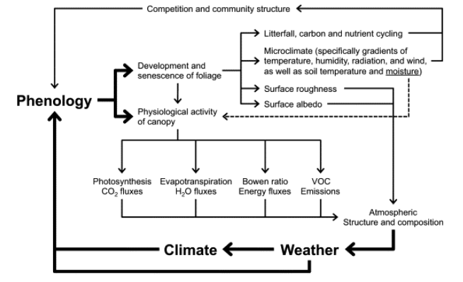
Surface roughness length is the height at which the wind speed theoretically reduces to zero and modulates land-surface energy fluxes. An extension of the growing season, and thus a longer presence of green cover, will generally increase the surface roughness length, leading to wetter and cooler conditions. For deciduous forests, however, the impact of phenology on surface roughness appears to be rather small (Schmid et al. 2000).
Surface albedo, the fraction of incident solar radiation that is reflected by the land surface, is altered with changes in the growing season. Although the impact of phenology changes on albedo varies among ecosystem types, in temperate and boreal deciduous forests, an advance of leaf unfolding will increase surface albedo (Hollinger et al. 2010).
Canopy conductance, the product of leaf area and stomatal conductance per unit leaf area, regulates transpiration rates. Higher foliage cover is commonly accompanied by increases in canopy conductance, as seen in various ecosystems, including grasslands and deciduous forests (Blanken and Black 2004).
Early spring onset increases annual evapotranspiration (Zha et al. 2010) and photosynthetic rates. However, these processes can decline if water become limiting later in the summer. Spring phenology also drives increases in latent heat flux (moist air), and decreases in sensible heat flux (dry air) and therefore in the Bowen ratio (the ratio of sensible to latent heat). As a result, the increased transpiration cools and moistens the air, as has been observed in temperate and boreal deciduous forests (Barr et al. 2007).
The extended plant activity further increases the fluxes of biogenic volatile organic compounds (BVOCs) (Peñuelas and Llusià 2003). These organic compounds produced by plants have the potential to cool or warm the climate. On the one hand, BVOCs generate organic aerosols that help form clouds and cool the surface. On the other hand, BVOCs increase production levels and extend the lifetime of methane in the atmosphere, enhancing the greenhouse effect of these gases.
All these mechanisms affect the structure and composition of the atmosphere which influence the weather and eventually the climate, feeding back again to phenology.
On the vegetation side, phenology changes can affect the microclimate and the timing of litterfall and subsequent carbon and nutrient cycling. These changes can also influence growth and competition among individuals, affecting the community structure, and thus feedback to larger-scale land-climate interactions.
13.1.6 Other impacts of phenological changes
13.1.6.1 Increased frost events during the growing season
Climate warming is driving an advance of leaf unfolding in trees, promoting longer growing seasons. However, the advance of the SOS can also increase the risk of frost events (Augspurger 2013). These frost events after the SOS can affect the structure and function of terrestrial ecosystems and have important environmental and economic consequences (Hufkens et al. 2012). Remote sensing studies suggest that the number of frost days during the growing season has generally increased with the lengthening of the growing season (Liu, Piao, et al. 2018). This increase was visible in ~43% of temperate and boreal forests in the Northern Hemisphere, and especially in Europe (Figure 13.9 a). Furthermore, the number of frost days was smaller in the 2000s (Figure 13.9 c) compared to previous decades (Figure 13.9 b), probably due to the deceleration of SOS advances during the warming hiatus periods.

Still, no agreement exists on whether frost risks increase or decrease under global warming (Vitasse, Lenz, and Körner 2014). An empirical study in Swiss forests found sufficient time between the last spring frost and leaf unfolding (C. Bigler and Bugmann 2018). These safety margins (calculated as the difference between DOYleaf-unfolding and DOYlast-frost) varied between species and across elevations. Further, they showed generally negative trends, i.e., decreasing safety margins and increasing frost risk over the last decades.
13.1.6.2 Plant–pollinator phenological mismatches
Changes in the phenological synchrony of plant-animal interactions have the potential to significantly impact the structure and dynamics of plant communities (Kharouba et al. 2018). Plant–pollinator systems are expected to be particularly vulnerable to phenological mismatches due to their mutualistic interactions (Benadi et al. 2014). However, there is little evidence for mismatches involving plants and pollinators (Hegland et al. 2009). The onset of flowering in plants and first appearance dates of pollinators appear to advance at similar rates in response to warmer temperatures, maintaining their phenological synchrony (Bartomeus et al. 2011, 2013). A recent empirical study on plant-pollinator interactions in Germany and the UK (Freimuth et al. 2022) showed higher phenological shifts in plants compared to insect groups (Figure 13.10 a). These shifts resulted in an increase in plant-pollinator synchrony with some insect groups during the last decades (Figure 13.10 b). In fact, most of the empirical studies have not detected phenological mismatches pointing out the high synchronization mechanisms between different pollinators and their floral hosts (Renner and Zohner 2018).

13.2 CO2 fertilization
Authored by Patricia Gribi, Patricia Helpap, Nils Tinner, and Michael Weatherford. Edited by Laura Marqués.
13.2.1 What is CO2 fertilization?
The term CO2 fertilization here refers to the hypothesis that plants respond to increasing atmospheric CO2 concentration by increasing terrestrial carbon storage which in turn creates a negative feedback on atmospheric CO2 (Walker et al. 2021). This definition explicitly mentions the feedback on CO2 concentrations as a mechanism to potentially slow anthropogenic climate change. The relevant scales for such processes are hence global in space and decadal to centennial in time. Consequently, net ecosystem production (NEP) needs to be positive at the global scale and over a specified period for the CO2 fertilization hypothesis to be true (Walker et al. 2021). Many processes and feedbacks take place at different scales (Figure 13.11) that eventually influence the terrestrial carbon storage. In the following sections, we lay out and describe how CO2 fertilization scale from the leaf to the globe.
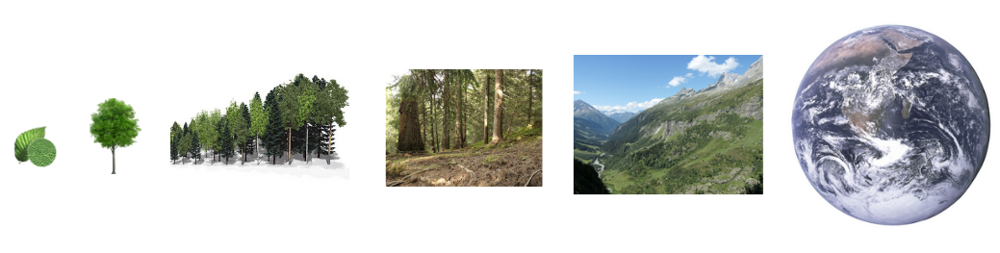
13.2.2 How to measure CO2 fertilization across scales?
Evidence for CO2 fertilization comes from data measured at the different spatial scales and provide information about the responses and main processes.
Elevated CO2 experiments
Experiments in which plants grow under elevated CO2 conditions are the only direct evidence at the leaf to ecosystem scale. Ecosystem-scale open-top chambers (OTCs) and larger free-air CO2 enrichment (FACE) experiments (Figure 13.12) provide evidence for the direct CO2 effect on photosynthesis and stomatal conductance and valuable information on biomass production, growth allocation, and transpiration. Such experiments do not last longer than 10 years, meaning the evidence for CO2 effects on mortality or carbon stock dynamics remains limited (Walker et al. 2021).

Tree-level measurements
Evidence on CO2 affecting individual tree growth stems mostly from tree growth measurements using tree rings and forest inventories which provide long-term estimates of wood BP in forests (Hubau et al. 2020). Tree ring data offers insight into annually resolved individual stem growth over millennia, informing on tree growth variability relating to environmental changes (Walker et al. 2021). Their downside includes the sampling bias (focuses on old, healthy trees) and the use of the one-dimensional tree-ring width as a proxy for wood BP. Besides, tree-ring analyses offer insights into tree growth, but not into forest dynamics. Forest inventories record information every 5-10 years and have the advantage of capturing forest dynamics and demographic processes such as growth, mortality and recruitment over decades (Pretzsch et al. 2014).
Ecosystem monitoring
Ecosystem scale processes can be captured using ecosystem monitoring methods such as eddy-covariance measurements (Figure 13.13) and global remote sensing. This captures carbon, water, and energy fluxes from the covariance of gas concentrations, and vertical wind velocities, as well as changes in vegetation cover, leaf area, and biomass through reflectance of wavelengths from earth’s surface (Walker et al. 2021).
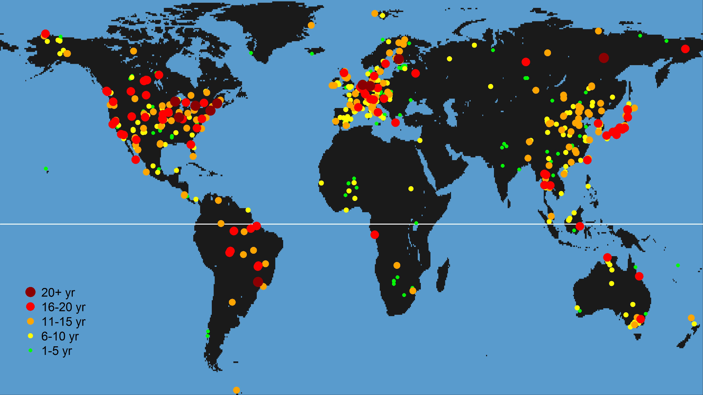
Regional-to-global records
At larger scales, several long-term data streams provide information on the global carbon stocks and their change over time. These data streams include near-surface and vertical profiles of atmospheric CO2 concentration and δ13C, global water-cycle measurements, and atmospheric composition from ice cores (Walker et al. 2021). Also, the Global Carbon Budget estimates provide details of land carbon uptake (Friedlingstein et al. 2024). Global carbon assimilation can be inferred from carbonyl sulfide (OCS) measurements as it is taken up through plant stomata and transformed into carbonic anhydrase (Whelan et al. 2018).
13.2.3 CO2 fertilization at the leaf scale
At the leaf level, rising CO2 increases photosynthesis and reduces stomatal conductance. The CO2 fertilization at this level is theoretically well understood and consistently observed.
Photosynthesis is either limited by light or CO2 (Farquhar, Caemmerer, and Berry 1980). As shown in section Section 4.3.5, the A-ci curve (Figure 4.6) relates the photosynthetic CO2 assimilated into the plant structure (A) versus the CO2 inside the plant (ci). When CO2 is limiting, theory predicts that higher CO2 increases net carbon assimilation (An) by increasing the carboxylation rate of Rubisco (AC). The enzyme Rubisco fixes CO2 but also catalyzes the oxygenation of RuBP (Ribulose-1,5-bisphosphate) which consumes O2 and produces CO2 as part of photorespiration. Elevated CO2 also reduces photorespiration due to higher CO2:O2 ratios in the leaf. So, the suppression of photorespiration by higher levels of CO2 increases An also when light is limiting. Elevated CO2 also enhances the RuBP availability, as the photosynthetic system can use ATP and NADPH more efficiently when less energy is lost to photorespiration. This can raise the electron-transport limited CO2 assimilation rate (AJ), thus increasing the light-saturated assimilation rate at high ci. Free-air CO2 enrichment (FACE) experiments showed that exposure to elevated CO2 concentration ([CO2]) increases light-saturated leaf photosynthetic rate (Asat) (Ainsworth and Long 2005) (Figure 13.14). Historical evidence based on deuterium isotopes in glucose from plant archives also suggested that the leaf-scale photorespiration to assimilation ratio has decreased since pre-industrial times which would correlate to an increase in photosynthesis (Ehlers et al. 2015).
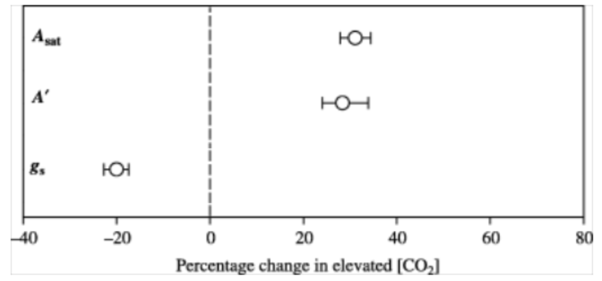
CO2 fertilization also decreases stomatal conductance (gs) and increases water use efficiency (WUE). This can be understood through Fick’s Law (Equation 4.5), which states that the assimilation rate (A) is proportional to the difference in [CO2] between the inside (ci) and outside (ca) of the leaf. Higher atmospheric CO2 allows plants to partially close their stomata to avoid losing water while taking up the same amount of CO2 for photosynthesis and thus increasing WUE. Experimental evidence has demonstrated reduced leaf-scale gs (Medlyn et al. 2001) and increased WUE (Ainsworth and Long 2005) in response to elevated CO2. Optimization theory also supports this conclusion and predicts a change in the An:gs ratio proportional to the change in [CO2] for both C3 (Medlyn et al. 2011) and C4 plants (Lin et al. 2015). Figure 13.15 shows modelled changes in An, WUE, and gs as described in Walker et al. (2021).
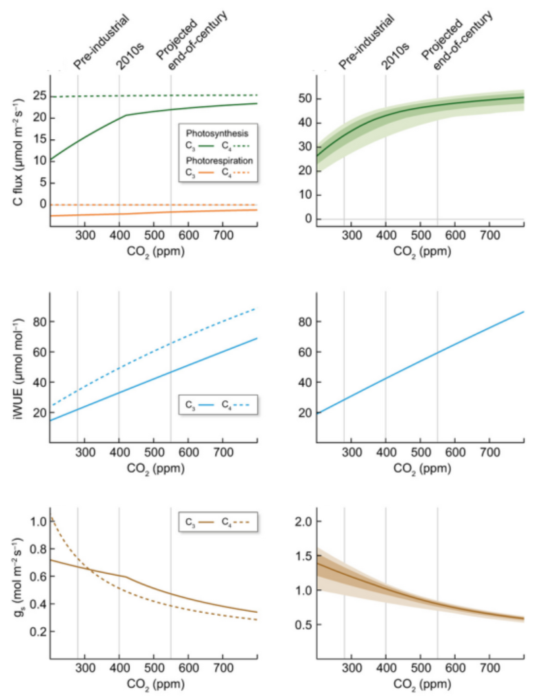
13.2.4 CO2 fertilization at the plant scale
At the plant-level, increasing CO2 enhances biomass production (BP, gC m-2 yr-1), i.e., plant growth (Walker et al. 2019). This is influenced by increasing photosynthetic rates and WUE (Walker et al. 2021) but it also depends on resource availability and allocation strategies (Norby et al. 2024). Evidence for the CO2 fertilization at this level exists from diverse sources of data, and although findings are mixed, there is high confidence that enhanced CO2 can stimulate BP.
Multiple FACE experiments show BP gains (Walker et al. 2019) commonly in young stands (Norby et al. 2005), rather than in old, mature forests (Ellsworth et al. 2017), but see (Norby et al. 2024). Tree-ring studies have found little evidence for increases in wood BP, with either no significant changes in tree-ring width across biomes (Peñuelas, Canadell, and Ogaya 2011), or contrasting trends in boreal forests (Girardin et al. 2016). A large number of forest inventory networks suggest increases in plant growth in tropical forests (Brienen et al. 2015; Hubau et al. 2020, see Figure 13.16 b) and other regions (Yu et al. 2019). Furthermore, McMahon, Parker, and Miller (2010) observed higher than expected growth in temperate forests, and CO2 fertilization was proposed as a possible mechanism.
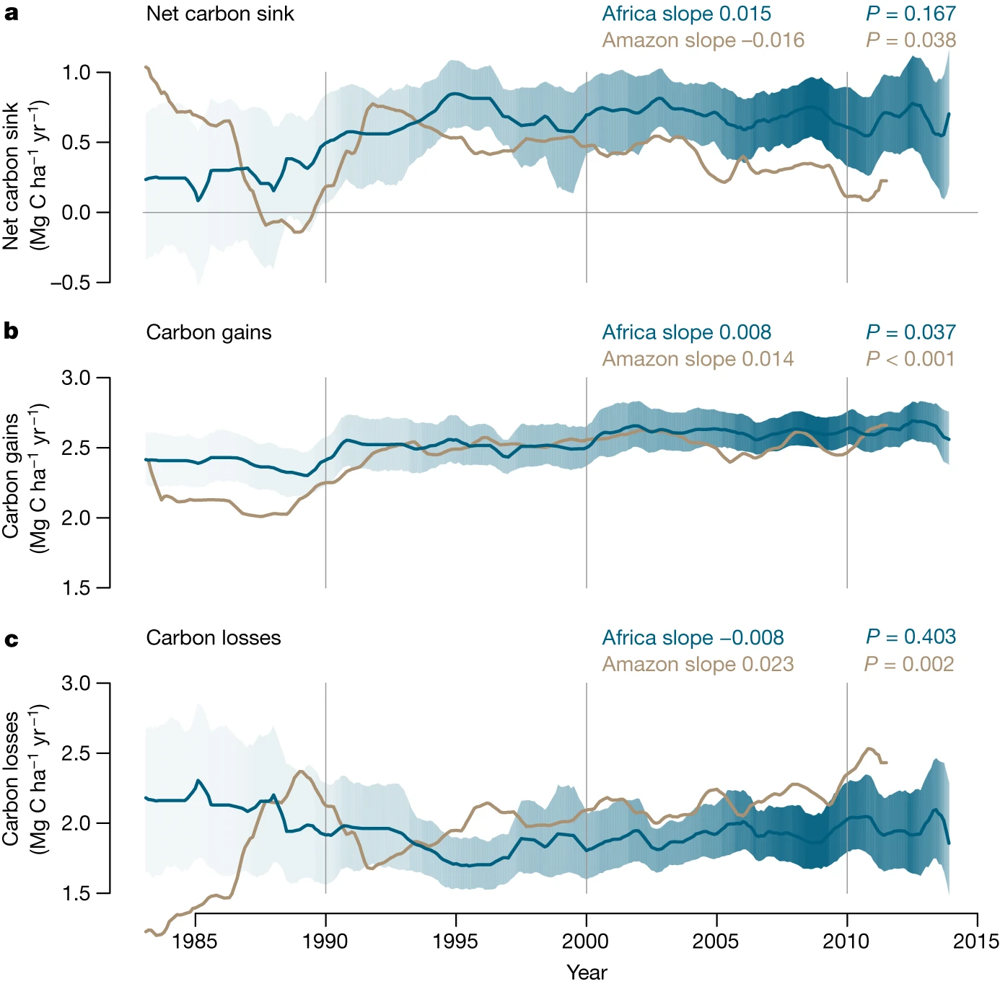
However, the CO2 fertilization effect on plant growth can be also mitigated by water (Hubau et al. 2020) and nutrient limitation (Walker et al. 2021). In fact, many studies show higher BP responses to CO2 fertilization at sites with higher nutrient availability (Terrer et al. 2018a). The Progressive Nitrogen Limitation (PNL) suggests that the long-term positive effects of elevated atmospheric CO2 on plant growth can be constrained over time as nitrogen becomes less available (Luo et al. 2004). This could also explain why most positive BP responses to rising CO2 have been observed in earlier-succession, which tend to have higher nutrient availability (Körner 2006), rather than later-succession forests (Ellsworth et al. 2017). However, experimental evidence of nitrogen limitation as a hindering factor for plant growth under elevated CO2 is limited (Norby et al. 2010).
13.2.5 CO2 fertilization at the forest scale
At the forest-level, enhanced growth rates due to rising CO2 might lead to increased biomass accumulation. However, biomass stocks are influenced by changes in tree growth and also in tree mortality (Walker et al. 2021). Changes in mortality are difficult to assess (McMahon, Arellano, and Davies 2019) since they can be caused directly by changes in environmental conditions and drought events (DeSoto et al. 2020) or indirectly by changes in growth, with higher growth rates accelerating competition and increasing mortality risk (Trugman et al. 2018). Little evidence exists on tree mortality responses to CO2 fertilization due to data and modeling limitations (Walker et al. 2021). Forest inventories have shown long-term increases in mortality rates in Amazon forests (Brienen et al. 2015; Hubau et al. 2020) with no detectable change in African tropical forests (Hubau et al. 2020) (Figure 13.16 c). This led to a decreasing trend in the net above-ground biomass in Amazonian tropical forests (Brienen et al. 2015; Hubau et al. 2020) and no significant change in African forests (Hubau et al. 2020) (Figure 13.16 a).
Further, evidence of CO2 fertilization at this scale affecting biomass accumulation appears conflicting. On the one hand, increased biomass stocks have been reported in forests around the globe [Pan et al. (2011); pan2024nature]. However, it is still uncertain whether the observed increase in biomass stocks results from accelerated tree growth driven by CO2 fertilization or recovery from past disturbances (McMahon, Parker, and Miller 2010). On the other hand, a line of work has argued that enhanced tree growth is associated with a reduction of tree longevity and carbon residence time, offsetting any possible gain in biomass stocks over longer timescales (Brienen et al. 2020; Bugmann and Bigler 2011; Büntgen et al. 2019; Körner 2017), as claimed by the grow-fast-die-young (GFDY) hypothesis. While much support for the GFDY hypothesis is based on variations across species (interspecific) (Brienen et al. 2015; Bugmann and Bigler 2011), growth-longevity trade-offs within species (intraspecific) have also been found previously (Christof Bigler and Veblen 2009; Di Filippo et al. 2012) but are less clear (Cailleret et al. 2017).
Although direct evidence is scarce, a FACE experiment in a young forest suggested stand biomass increases, analyzed as a shift in the self-thinning trajectories, i.e., the negative relationship between stand density and average size that emerges as forest develops (Kubiske, Woodall, and Kern 2019). An upward shift in the self-thinning line indicates increased carbon carrying capacity in the stand across tree size classes (Figure 13.17 a) and was recently found in temperate forests (Marqués et al. 2023). Higher biomass accumulation than expected from natural recovery was also found using repeated recent censuses of stands of different ages (Figure 13.17 b) (McMahon, Parker, and Miller 2010). Recent vegetation models have improved the representation of tree mortality showing the potential of biomass increases (Needham et al. 2020) under elevated CO2. Model simulations combined with forest inventories supported that enhanced tree growth leads to increases in biomass stocks and changes in the self-thinning relationship despite simultaneous decreases in carbon residence time and tree longevity (Marqués et al. 2023). These findings reconcile reports of tree longevity reductions (Brienen et al. 2020; Bugmann and Bigler 2011; Büntgen et al. 2019) with model predictions of increased forest biomass (Pugh et al. 2020; Terrer et al. 2019; Yu et al. 2019).
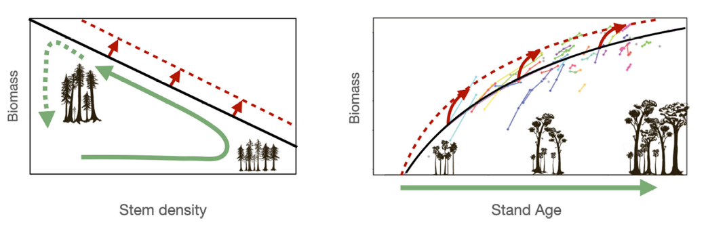
13.2.6 CO2 fertilization at the ecosystem scale
At the ecosystem-level, elevated CO2 can impact soil carbon dynamics, including changes in soil organic matter (SOM) decomposition and soil respiration rates (Walker et al. 2021). Evidence from FACE experiments has shown that elevated CO2 increases plant litter production (Iversen et al. 2012), soil C inputs and SOM decomposition rates (Van Groenigen et al. 2014) (Figure 13.18 a). Still, findings from ecosystem-scale experiments show no clear results and studies in the long-term are scarce. For example, no significant increases in soil respiration were found in response to CO2 enrichment over 3 years experiment (Drake et al. 2018) (Figure 13.18 b). Additionally, faster SOM decomposition due to higher CO2 could increase nutrient availability in soils and hence reduce plant nutrient limitation (Walker et al. 2015). Mycorrhizal associations and other root–microbe interactions involved in plant nutrient acquisition are likely important mediators of this process (Terrer et al. 2018b).
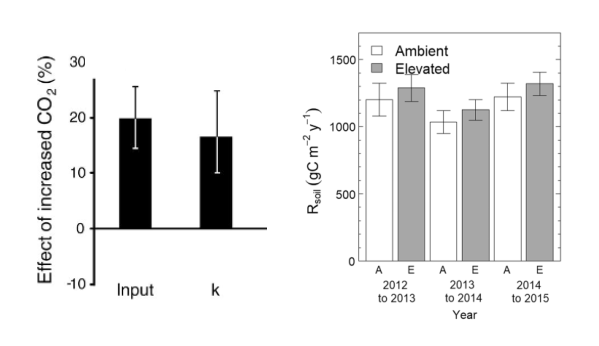
Net Ecosystem Production (NEP), calculated as the difference between Gross Primary Production (GPP) and ecosystem respiration (ER) can be measured directly from eddy-covariance flux towers. A multi-site study indicated increases in NEP and GPP while unchanged ER (Figure 13.19), with high CO2 sensitivity (Fernández-Martı́nez et al. 2017).
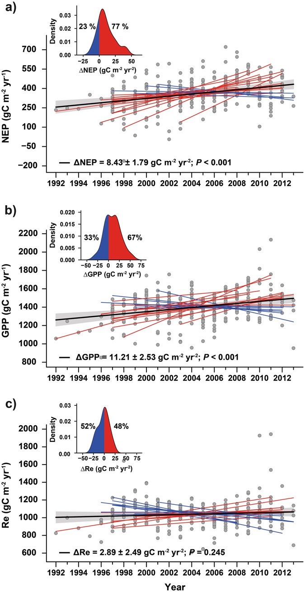
13.2.7 CO2 fertilization at the landscape and global scales
At the landscape scale, CO2 fertilization can influence different type of ecosystems (e.g., forests, grasslands, wetlands). Variations in vegetation types and soil properties affect how CO2 fertilization influence landscape and global carbon stocks. Natural disturbances and anthropogenic land-use changes such as deforestation can cause soil erosion, affecting carbon cycling at the landscape scale (Walker et al. 2021). Further, increased plant productivity due to CO2 fertilization can result in more organic matter entering soils, potentially leading to higher DOC production (dissolved organic carbon in water that can be transported through rivers, lakes, and soils) at this scale (Nakhavali et al. 2024). Figure 13.20 represents the main processes and feedbacks from the leaf to the landscape scales.
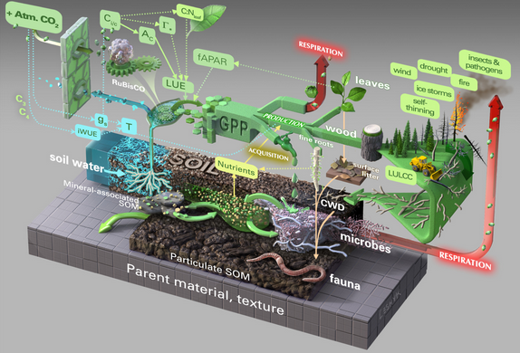
Generally, satellite data shows greening trends over large areas of the globe (as seen from LAI values) and are predominanly attributed to rising CO2 levels (Figure 13.27).
At the global scale, the Global Carbon Budget has shown increases in land C sink in most of the regions (Figure 13.21), with a few exceptions in areas where the negative effects of climate variability and climate change counterbalance CO2 effects (Friedlingstein et al. 2024).
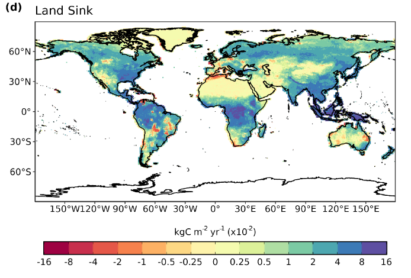
13.3 Land Surface Greening
Authored by Florence Hammer, Joris Amiet and Meret Weh. Edited by Laura Marqués.
13.3.1 What is global greening?
Land surface greening refers to the expansion of vegetation greenness resulting from increased plant coverage, density, and species composition (Piao et al. 2020). This phenomenon has been typically observed across the globe since the early 1980s (Figure 13.22) and measured by satellite observations of vegetation indices such as the NDVI and the LAI.
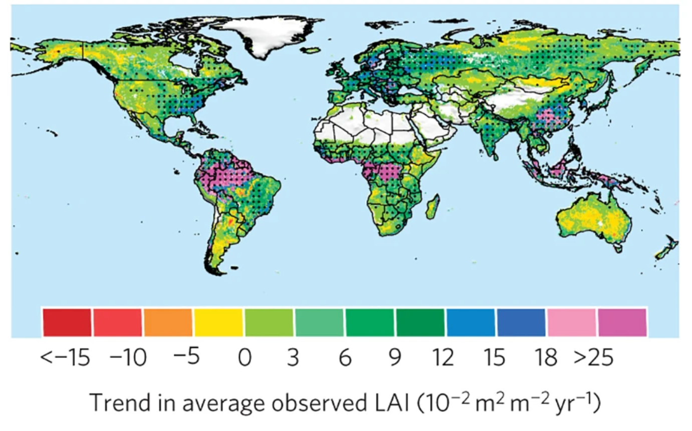
13.3.2 How to detect land surface greening?
13.3.2.1 Satellite sensors
Photosynthetic pigments in plants, such as chlorophyll and carotenoids, strongly absorb light in the visible spectrum (400-700nm), particularly in the red wavelengths (620-700nm) (RED). In the near-infrared range (700-1300nm) (NIR) leaf constituents absorb little, leading to high NIR reflectance (Piao et al. 2020). This distinct spectral signature, unique to vegetation, is used to calculate vegetation indices (VIs) for assessing vegetation greenness and health (Figure 13.23). Satellite-based remote sensing has enabled continuous estimation of vegetation greenness since the 1980s (Piao et al. 2020). Different satellite sensors have been used like the Advanced Very-High Resolution Radiometer (AVHRR), Moderate Resolution Imaging Spectroradiometer (MODIS), Vegetation, Medium Resolution Imaging Spectrometer (MERIS) and Visible Infrared Imaging Radiometer Suite (VIIRS). They operate with varying temporal coverage and provide VIs using different spectral-band specifications and data processing techniques (Figure 13.23).
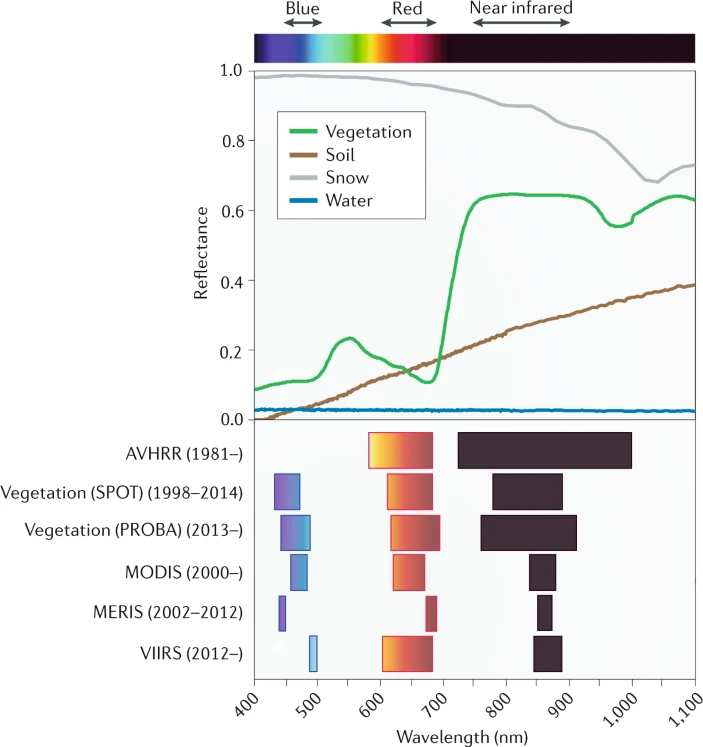
13.3.2.2 Vegetation indices
The most common variables and indices in detecting land surface greening are:
The Normalized Difference Vegetation Index (NDVI) is calculated by comparing the reflectance in the NIR and RED, which are differently absorbed and reflected by plants (Piao et al. 2020). The index (unitless) ranges from -1 to +1 and is used to indicate the health of vegetation based on light reflectance. Healthy vegetation reflects more NIR and absorbs more RED, resulting in higher NDVI values (Figure 13.24 b), whereas values approaching zero or negative indicate non-vegetated surfaces, barren land, or water. The Enhanced Vegetation Index (EVI) is calculated using reflectance in the blue, red, and near-infrared bands. EVI is a modified NDVI with improved sensitivity, particularly in areas with dense vegetation, where NDVI tends to saturate. The Near-Infrared Reflectance of Terrestrial Vegetation (NIRv) is a vegetation index that combines the NIR with the NDVI to provide a more accurate measure of photosynthetic activity and vegetation greenness.
\[ \begin{align} NDVI = \frac{NIR-RED}{NIR+RED} \end{align} \tag{13.1}\]
The Leaf Area Index (LAI) is a key vegetation metric that measures the total leaf area per unit ground area (Section 4.2). LAI is defined as the one-sided green leaf area per unit vegetated ground area in broadleaf canopies and as one-half the total needle surface area per unit vegetated ground area in coniferous canopies (Zhu et al. 2013). LAI values are commonly derived from vegetation indices such as NDVI. A higher LAI value indicates greater leaf area, reflecting greater photosynthetic potential and plant density (Figure 13.24 a).
The fraction of Absorbed Photosynthetically Active Radiation (fAPAR) measures the fraction (unitless) of incoming solar radiation in the photosynthetically active spectrum that is absorbed by the vegetation (Chapter 4). fAPAR can be calculated through models based on vegetation indices like NDVI or EVI. Unlike FPAR, which includes all intercepted PAR (including non-photosynthetic components like stems and dead leaves), fAPAR specifically measures the radiation absorbed by chlorophyll (Zhu et al. 2013), making it directly tied to photosynthetic activity and vegetation growth and greenness.
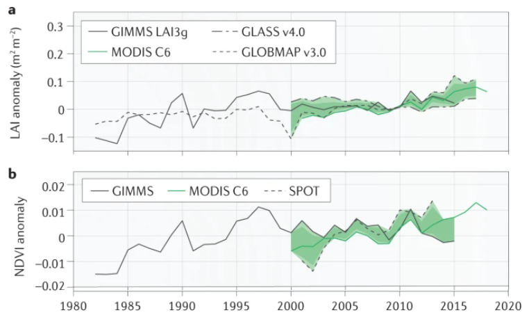
13.3.3 Global greening trends
In the last four decades, contrasting greening trends have been reported (Piao et al. 2020) (Figure 13.25). While many studies have highlighted a global land surface greening since the 1980s (Zhu et al. 2016; Piao et al. 2014; Chen et al. 2019), others have suggested a slowdown of the greening trends (Winkler et al. 2021), particularly after 2000 [De Jong et al. (2012); wang2020science]. However, recent evidence has claimed that these findings may result from technical issues in the AVHRR NIRv datasets (Zhu et al. 2021; Frankenberg et al. 2021) and sensor degradation in the older collection MODIS C5 (Zhang et al. 2017). These studies highlighted the importance of rigorous data processing to minimize the artifacts that may lead to temporal inconsistencies (Tian et al. 2015), affecting long-term greening trends.
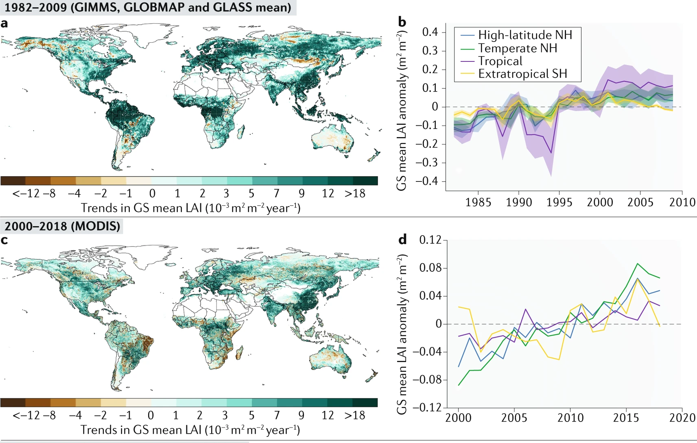
A study published this year has highlighted ongoing issues with temporal inconsistencies in AVHRR vegetation index datasets (S. Jeong et al. 2024). The first issue is the systematic biases between AVHRR sensors at pseudo-invariant calibration sites (e.g., desert regions with lower variability over time), introducing temporal inconsistency linked to spurious instrumental biases rather than actual vegetation changes (Frankenberg et al. 2021). The second issue concerns the orbital drifting, which changes the timing of satellites’ passes over specific locations. This shift affects the solar zenith angle and influences the amount of light reflected by the vegetation (Tian et al. 2015). The third issue is the incomplete harmonization of AVHRR vegetation indices with other satellite data, like the MODIS NDVI. S. Jeong et al. (2024) addressed the temporal inconsistencies produced by these three issues and revealed a persistent greening trend in the harmonized AVHRR NDVI and NIRv for 1982–2021. These discrepancies in vegetation index trends have caused an overestimation of the greening trend before 2000 and an underestimation after 2000 (Figure 13.26).
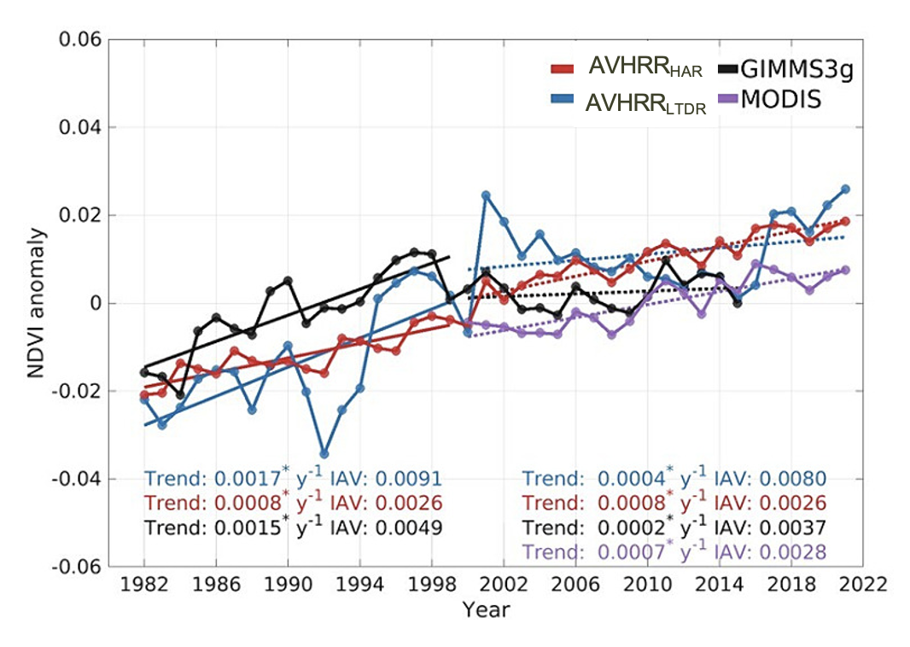
13.3.4 Main drivers of global greening
Vegetation greening has been attributed to several factors, including indirect factors such as rising atmospheric CO2 levels, climate change, nitrogen deposition, and direct factors like land-use changes. While vegetation greenness has generally increased globally, the drivers of this change vary regionally (Figure 13.27).
CO2 fertilization Higher atmospheric CO2 levels enhance photosynthesis, leading to increased plant growth, especially in C3 plants (Walker et al. 2021). As shown in chapter Section 13.2, the processes and responses CO2 fertilization vary among spatial scales (Figure 13.11) and eventually influence terrestrial greening. FACE experiments have generally shown that elevated CO2 significantly enhances vegetation productivity and leaf area. However, the strength of the CO2 fertilization effect can be limited by extreme weather events and nutrient and water availability (Norby et al. 2010; Terrer et al. 2019). Further, changes in mortality and biomass accumulation are still uncertain (Section 13.2.5). Although tropical regions are generally greening, some areas have shown browning trends (Piao et al. 2020) due to deforestation (Chen et al. 2019). In semi-arid regions, where water is the limiting factor to vegetation growth, an increase in WUE due to rising CO2 has led to increases in foliage cover and thus contributing to greening trends (Donohue et al. 2013).
Climate change
Warmer temperatures can enhance greenness in boreal and Arctic regions by enhancing photosynthesis and extending the growing season (Zhu et al. 2016). The high northern latitudes have experienced widespread vegetation greening, but browning trends are growing, especially in boreal forests affected by disturbances like fires, harvesting, and insect defoliation (Goetz et al. 2005). In water-limited ecosystems, precipitation changes are the primary drivers of greening and browning. This is most evident in semi-arid areas of southern Africa and Australia, where increased precipitation has stimulated vegetation growth (Donohue, McVICAR, and Roderick 2009).
Land-use change
Human land-use management is a significant driver of global greening (Zhu et al. 2016), contributing to about one-third (or more) of the observed increase in LAI (Chen et al. 2019). Agricultural areas, particularly in India, and afforested areas in China, are driving this trend. Recent satellite data from 2000–2017 highlight substantial greening in China and India, which together account for over 30% of the total global increase in LAI globally (China 25% and India 6.8%). This greening in China comes primarily from forests (42%) and croplands (32%), whereas in India, it is largely due to croplands (82%), with a smaller contribution from forests (4.4%) (Chen et al. 2019). The so-called “Green Revolution” has been facilitated by agricultural intensification, including practices such as multiple cropping and the use of irrigation, fertilizers, and mechanization.
Nitrogen deposition
Insufficient nitrogen can limit plant growth, potentially slowing greening or causing browning, while excess nitrogen can boost growth in nitrogen-limited ecosystems (Peñuelas et al. 2013). However, the few DGVMs that incorporate the nitrogen cycle suggest that nitrogen deposition does not play a dominant role in global or regional greening trends (Zhu et al. 2016).
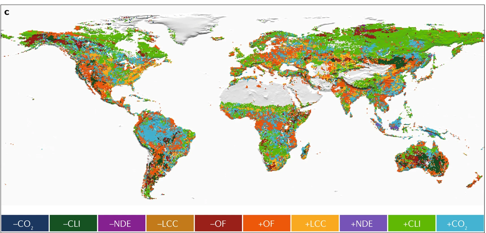